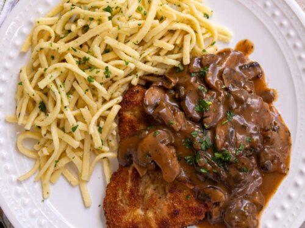

Back to recipes
Jaegerschnitzel

Description
Jaegerschnitzel (hunter schnitzel) is a traditional German dish consisting of a breaded pork or
veal cutlet topped with a brown mushroom gravy. It's typically served with spaetzle (shown above)
or a potato-based dish such as french fries or kartoffelnudeln (potato noodles).
Ingredients
- Oil for frying
- 4 boneless pork steaks or chops
- Salt and pepper
- 1/2 cup all-purpose flour combined with 1 teaspoon salt
- 2 large eggs, lightly beaten
- 3/4 cup plain breadcrumbs
- Brown mushroom gravy
- Chopped fresh parsley, garnish (optional)
Steps
- Pound the pork chops between two sheets of plastic wrap with the flat side of a meat tenderizer
until 1/4 inch thick. Lightly sprinkle both sides with salt and freshly ground black pepper.
- Place the flour mixture, egg, and breadcrumbs in 3 separate shallow bowls. Dredge the pork chops in
the flour, the egg, and the breadcrumbs, coating both sides and all edges at each stage. Be careful
not to press the breadcrumbs into the meat. Gently shake off the excess crumbs. (Note: Don't let
the schnitzel sit in the coating or they will not be as crispy once fried - fry immediately.)
- Heat the oil to 330 degrees F (not hotter or the Schnitzel will burn before the meat is done, not
lower or the Schnitzel will absorb the oil and be greasy). Use just enough oil so that the Schnitzels
“swim” in it. Fry the Schnitzel for about 2-3 minutes on both sides until a deep golden brown.
Transfer briefly to a plate lined with paper towels.
- Serve immediately topped with Homemade Brown Mushroom Gravy and garnished with chopped fresh parsley.
Avoid completely drenching the Schnitzel with gravy so that much of the Schnitzel remains crispy.